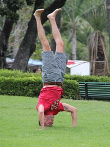

| Current pose: tripod head stand, legs extended straight up, arms at 90deg | Adjacent poses: tripod head stand, legs bent, arms at 90deg | tripod head stand, legs extended out, arms at 90deg | no-handed head stand | |
|
Salamba-Shirshasana left-right symmetric arms at 90deg  |
tripod head stand, legs bent, arms at 90deg
tripod head stand, legs extended out, arms at 90deg |